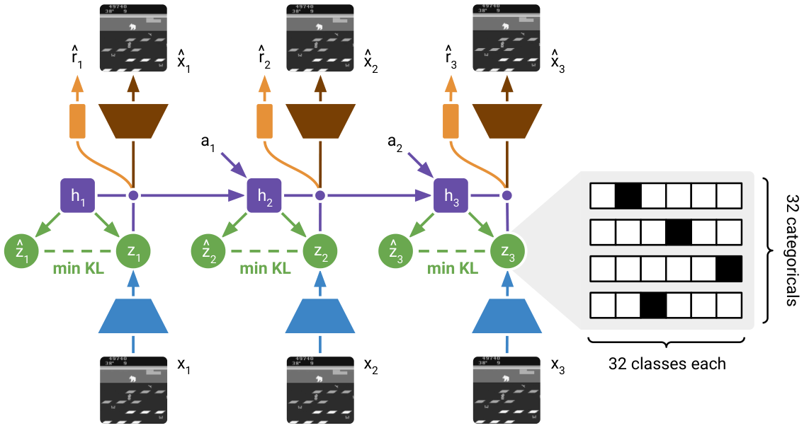
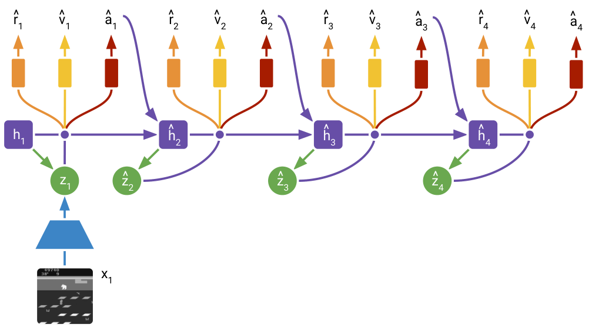
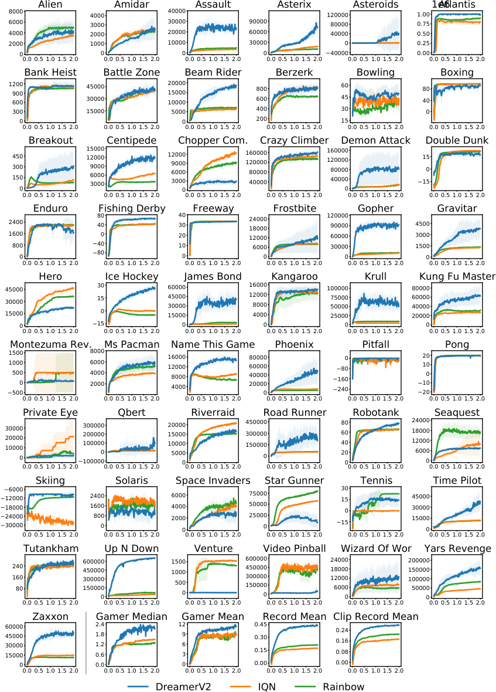
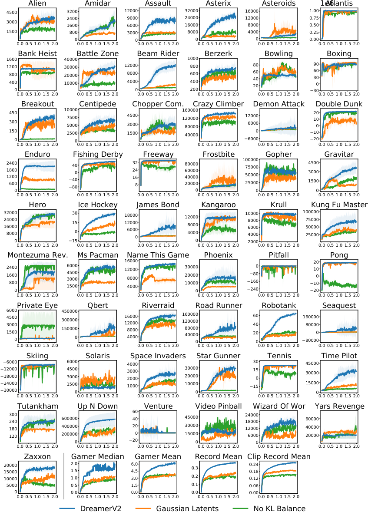

Mastering Atari with Discrete World Models
原论文摘要 · English Abstract
Intelligent agents need to generalize from past experience to achieve goals in complex environments. World models facilitate such generalization and allow learning behaviors from imagined outcomes to increase sample-efficiency. While learning world models from image inputs has recently become feasible for some tasks, modeling Atari games accurately enough to derive successful behaviors has remained an open challenge for many years. We introduce DreamerV2, a reinforcement learning agent that learns behaviors purely from predictions in the compact latent space of a powerful world model. The world model uses discrete representations and is trained separately from the policy. DreamerV2 constitutes the first agent that achieves human-level performance on the Atari benchmark of 55 tasks by learning behaviors inside a separately trained world model. With the same computational budget and wall-clock time, Dreamer V2 reaches 200M frames and surpasses the final performance of the top single-GPU agents IQN and Rainbow. DreamerV2 is also applicable to tasks with continuous actions, where it learns an accurate world model of a complex humanoid robot and solves stand-up and walking from only pixel inputs.
CNN 编码图像
图像变成紧凑模型状态
RSSM 先验展开想象
不看图像向前推演 H=15 步
Actor 在想象中选动作
在隐空间里采样动作
Critic 用 λ-目标评估
价值指导策略改进
真实环境执行回写
新经验写回缓冲再训模型
问题与动机
在 DreamerV2 之前，Atari 几乎是无模型强化学习的专属领地：从 DQN 到 Rainbow、IQN，顶级智能体都靠在真实环境里海量试错、直接拟合价值或策略来达到人类水平。世界模型路线虽然诱人——先在脑子里学会“世界怎么运转”，再在想象中练策略——却始终卡在精度上：Ha 与 Schmidhuber 的 World Models、PlaNet、DreamerV1 都只在连续控制任务上成功；像素空间的视频预测模型 SimPLe 只在 36 个游戏的子集上有效，训练步数一多收益就停滞。Atari 的画面变化剧烈、物体小而多、奖励稀疏，模型每一步的小误差会在想象中滚雪球，策略学到的常常是“模型的幻觉”而不是真本事。
同期最强的反例是上一篇精读的 MuZero：它证明“学到的模型加规划”可以在 Atari 上非常强，但代价是 200 亿帧环境交互、80 个加速器日的算力、复杂的蒙特卡洛树搜索，而且实现并不公开，在一块 GPU 上训一个智能体要两个多月。更关键的是，MuZero 的模型是任务专用的——它只预测奖励、价值和策略，从不重建图像，学到的隐状态无法迁移到别的任务。于是问题变得尖锐：能不能只用通用的图像世界模型，在一块 GPU、2 亿帧的常规预算里，达到 Atari 人类水平？
DreamerV2 的回答是“能”。它没有发明全新的算法框架，而是在 DreamerV1 的 RSSM 世界模型上只做了几处针对性的小改动——离散隐状态、KL balancing、Reinforce 为主的策略梯度——就成为第一个纯靠在世界模型内部学习而达到 Atari 人类水平的智能体。这个结果的意义不只是分数：它证明了世界模型本身可以准到足以“以假代真”，模型精度不再是模型强化学习的瓶颈。
- Atari 长期是无模型方法的领地，世界模型一直不够准
- MuZero 虽强，但要 200 亿帧、80 加速器天且不公开
- DreamerV2 只改了几处小地方，就在单 GPU 上达到人类水平
核心思想
DreamerV2 的核心思想是把“学世界”和“学行为”彻底分开、先后训练。世界模型只从过去的经验数据里学习：给定图像序列 $x_{1:T}$、动作 $a_{1:T}$、奖励 $r_{1:T}$ 与折扣 $\gamma_{1:T}$，它学习一个紧凑隐状态的动力学，能够在不看图像的情况下预测未来。然后 actor 与 critic 完全在想象的隐状态轨迹里训练——想象从训练中遇到过的真实模型状态出发，用学到的先验向前展开 $H=15$ 步，全程不生成图像、不碰真实环境。行为学得好不好，就成了世界模型准不准的直接试金石。
第一个关键洞见是：隐状态应该是离散的。Atari 世界里充满“突变”——走进新房间、吃掉一颗豆子、敌人突然消失——这些都不是平滑的连续变化。高斯先验是单峰的，拟合不了“下一帧可能是 A 也可能是 B”的多模态后验混合。DreamerV2 把随机隐状态 $z_t$ 换成 32 个独立的分类变量、每类 32 个类别，采样后展平成一条 1024 维、只有 32 个激活位的稀疏二值向量。分类先验可以精确拟合分类后验的混合，稀疏性本身也有助于泛化；优化则用直通梯度绕过不可导的采样步骤。
第二个关键洞见是：KL 损失的两个方向不该用同一个学习速率。在变分目标里，KL 项同时做两件事——训练先验 $p_\phi$ 去追赶后验 $q_\phi$，以及把后验往先验上拉做正则化。但先验刚开始学得很差，这时把后验往一个“还没学好的先验”上拉，只会把表征拉坏。KL balancing 用 $\alpha=0.8$ 加权先验的交叉熵、用 $1-\alpha$ 加权后验的熵，让先验学得更快，KL 的减小更多靠“先验变准”而不是“后验变糊”。这两个改动都不大，但消融实验显示它们各自都是决定成败的量级。
- 学世界与学行为彻底分开：策略只在想象里训练
- 隐状态离散化：32 个 32 类分类变量，适配 Atari 的突变动态
- KL balancing：让先验学得比后验正则化更快，$\alpha=0.8$
模型结构与关键机制
世界模型由四部分组成：CNN 图像编码器、循环状态空间模型（RSSM），以及图像、奖励、折扣三个预测器。RSSM 的核心是一条确定性循环状态 $h_t$（GRU，600 单元），它像记忆一样把历史信息压缩下来；每个时间步，模型在 $h_t$ 的基础上算出两个随机隐状态的分布：结合当前图像 $x_t$ 的后验 $z_t$，与不看图像、只靠历史预测的先验 $\hat{z}_t$。确定性状态与随机状态的拼接 $[h_t; z_t]$ 就是紧凑的模型状态，策略与价值都直接建立在它上面。六个组件的数学关系是：
$$ \begin{aligned} h_t &= f_\phi(h_{t-1}, z_{t-1}, a_{t-1}) \\ z_t &\sim q_\phi(z_t \mid h_t, x_t) \\ \hat{z}_t &\sim p_\phi(\hat{z}_t \mid h_t) \\ \hat{x}_t &\sim p_\phi(\hat{x}_t \mid h_t, z_t) \\ \hat{r}_t &\sim p_\phi(\hat{r}_t \mid h_t, z_t) \\ \hat{\gamma}_t &\sim p_\phi(\hat{\gamma}_t \mid h_t, z_t) \end{aligned} $$
其中 $f_\phi$ 是 GRU 递推，决定确定性状态如何随上一状态、上一隐状态与上一动作演化；$q_\phi$ 是表征模型，即近似后验；$p_\phi(\hat{z}_t \mid h_t)$ 是转移预测器，即时间先验；后三行是图像、奖励与折扣三个预测器；$\phi$ 是全部组件的参数向量。注意转移预测器预测下一状态时不用下一帧图像——这正是它之后能“凭空想象”的前提。
离散化的实现细节值得细看。$z_t$ 的 32 个分类变量各自输出 32 类上的 logits，采样得到 one-hot 向量；反向传播时用直通梯度：前向用采样的 one-hot，反向把梯度直接传给 softmax 概率，即 $\mathrm{sample} = \mathrm{sample} + \mathrm{probs} - \mathrm{sg}(\mathrm{probs})$，其中 $\mathrm{sg}(\cdot)$ 表示停止梯度。论文还试过用更多二元隐变量代替分类变量，希望得到更解耦的表征，结果反而更差，于是没有采用。
训练目标是序列 VAE 的证据下界（ELBO）：图像、奖励、折扣三项对数损失，加上 $\beta$ 缩放的 KL 损失，Atari 上 $\beta=0.1$，连续控制上 $\beta=1.0$：
$$ \mathcal{L}(\phi) = \mathbb{E}_{q_\phi} \left[ \sum_{t=1}^{T} -\ln p_\phi(x_t \mid h_t, z_t) - \ln p_\phi(r_t \mid h_t, z_t) - \ln p_\phi(\gamma_t \mid h_t, z_t) + \beta \, \mathrm{KL}\left[ q_\phi(z_t \mid h_t, x_t) \, \| \, p_\phi(z_t \mid h_t) \right] \right] $$
式中期望是对后验 $q_\phi$ 下的隐状态序列取的；前三项让模型状态能重建图像、预测奖励与回合结束；KL 项训练先验并正则化后验。KL balancing 把 KL 项拆成两项实现：
$$ \mathcal{L}_{\mathrm{KL}} = \alpha \, \mathrm{KL}\left[ \mathrm{sg}(q_\phi) \, \| \, p_\phi \right] + (1-\alpha) \, \mathrm{KL}\left[ q_\phi \, \| \, \mathrm{sg}(p_\phi) \right] $$
其中 $\mathrm{sg}(\cdot)$ 是停止梯度，$\alpha=0.8$：第一项只训练先验，第二项只正则化后验，两个方向的学习速率之比为 $\alpha : (1-\alpha) = 4:1$。
一些容易忽略但决定成败的工程选择：输入是 $84\times84$ 灰度图，下采样到 $64\times64$ 以复用 DreamerV1 的卷积结构；全部组件用 ELU 激活；图像与奖励预测器输出单位方差对角高斯的均值，折扣预测器输出伯努利分布；世界模型共 2000 万参数（整个智能体 2200 万），训练批量 $B=50$、序列长 $L=50$，经验以 200 万条的 FIFO 缓冲保存，序列起始点在回合内均匀采样以保证看到足够多的回合结尾。
- RSSM：GRU 确定性状态 $h_t$ 加分类随机状态 $z_t$
- 直通梯度让离散采样可导
- 损失等于图像加奖励加折扣对数损失加 $\beta$ 缩放的 KL，Atari 上 $\beta=0.1$
- 世界模型 2000 万参数，批量 $B=50$、序列长 $L=50$

训练与推理流程
整个智能体按三步循环工作：世界模型从经验数据中学习；actor 与 critic 在想象中学习；actor 在真实环境中执行、把新经验写回缓冲。关键效率数字是：想象不需要生成图像，单块 GPU 可以并行模拟 2500 条隐状态轨迹；2 亿步真实环境交互对应着 4680 亿个想象的紧凑状态，是动作重复后真实输入的 10000 倍。策略几乎完全是在“脑子里”练出来的。
想象 MDP 的定义很干净：初始状态分布就是世界模型训练时遇到过的后验模型状态；转移用先验 $p_\phi(\hat{z}_t \mid \hat{z}_{t-1}, \hat{a}_{t-1})$ 展开到视野 $H=15$；奖励取奖励预测器的均值，折扣取折扣预测器的输出；actor 与 critic 的损失还按累积预测折扣加权，以柔和地处理回合可能结束。注意隐状态序列本身是马尔可夫的，所以 actor 与 critic 只需以当前模型状态 $\hat{z}_t$ 为条件，不需要额外记忆。
Critic 用 $\lambda$-目标做时序差分学习，$\lambda=0.95$，在单步目标与蒙特卡洛回报之间做指数加权的折中：
$$ V^\lambda_t = \hat{r}_t + \hat{\gamma}_t \left( (1-\lambda) v_\xi(\hat{z}_{t+1}) + \lambda V^\lambda_{t+1} \right) $$
其中 $\hat{r}_t$ 是想象奖励，$\hat{\gamma}_t$ 是想象折扣，$v_\xi$ 是 critic 网络；$t=H$ 时目标就是 $v_\xi(\hat{z}_H)$；$\lambda$ 越接近 1 越看重长视野回报。Critic 损失是向 $\mathrm{sg}(V^\lambda_t)$ 回归的平方损失，目标用每 100 步更新一次的目标网络计算以稳定学习。
Actor 的损失把两种梯度估计器拼在一起：
$$ \mathcal{L}(\psi) = \mathbb{E} \left[ \sum_{t=1}^{H-1} -\rho \ln p_\psi(\hat{a}_t \mid \hat{z}_t) \, \mathrm{sg}(V^\lambda_t - v_\xi(\hat{z}_t)) - (1-\rho) V^\lambda_t - \eta \, \mathrm{H}[\hat{a}_t \mid \hat{z}_t] \right] $$
第一项是带基线 $v_\xi(\hat{z}_t)$ 的 Reinforce，第二项是沿动力学反传的价值梯度，第三项是熵正则；$\rho$ 控制混合比例，$\eta$ 控制熵强度。Atari 上纯 Reinforce（$\rho=1$、$\eta=10^{-3}$）明显更好，而连续控制上动力学反传（$\rho=0$、$\eta=10^{-4}$）明显更好——论文认为有偏但低方差的直通梯度在离散动作上不适合做策略优化。部署时只用 actor：把当前图像编码进模型状态、采样一个动作即可，不需要在线搜索或规划。
- 想象不生成图像：单 GPU 并行 2500 条轨迹，想象状态是真实输入的 10000 倍
- Critic 用 $\lambda$-目标（$\lambda=0.95$）做 TD 学习
- Atari 上纯 Reinforce（$\rho=1$）最好，连续控制上动力学反传（$\rho=0$）最好
- 部署时只用 actor，无需在线规划

实验与结果
实验设定是 Atari 的标准硬仗：55 个游戏、粘性动作、2 亿环境步、动作重复 4、每回合上限 108000 步、不给生命数信息、完整动作空间、单任务单环境实例、单块 NVIDIA V100、10 天内训完。结果是玩家归一化中位数 2.15——中位数超过 2 倍人类玩家水平，超过 IQN 的 1.29、Rainbow 的 1.47、C51 的 1.09 与 DQN 的 0.65；玩家归一化均值 11.33 同样领先。作者还指出常用聚合方式各有毛病，于是同时报告了以人类世界纪录归一化的均值 0.44 与截断到 1 的截断纪录均值 0.28，并推荐后者作为更稳健的跨游戏比较标准。
消融实验（稍早版本，截断纪录均值）把每个改进的贡献量化得很清楚：完整版 0.25；去掉图像梯度后跌到 0.01，几乎归零——世界模型的表征几乎全靠图像重建信号撑着；去掉离散隐状态跌到 0.19，去掉 KL balancing 跌到 0.16；去掉 Reinforce 策略梯度跌到 0.15。逐游戏比较更直观：分类隐变量在 42 个游戏上优于高斯、只在 8 个上更差；KL balancing 在 44 个游戏上优于标准 KL、只在 6 个上更差。
两个“反直觉”的发现值得记住。第一，停掉奖励梯度对表征学习几乎没有伤害（0.24 对 0.25），在 15 个游戏上反而更好——这说明表征不是“为预测过去奖励而特化”的，纯图像信号学出的通用表征可能泛化得更好，这也正是 DreamerV2 与 MuZero 的根本分歧：MuZero 的表征完全由奖励与价值梯度塑造。第二，学习率、KL 系数、熵系数、梯度混合的退火调度只能带来边际收益，论文报告的分数都没有用调度（用调度的版本中位数可到 2.64）。
通用性的证据在附录：Humanoid 行走任务是 21 维连续动作、纯像素输入，DreamerV2 把 $\rho$ 设为 0、$\eta$ 设为 $10^{-5}$、$\beta$ 设为 2 后，可靠地学会了开局站立与随后的行走，据作者所知是首个仅用像素解出 Humanoid 的发表结果；Montezuma's Revenge 这个硬探索游戏上，不用任何显式探索机制、只把折扣 $\gamma$ 降到 0.99，就追平了接在 Rainbow 上的探索算法 ICM。但主实验里 Montezuma 的分数只有 81 分（Rainbow 与 IQN 是 500 分），说明稀疏奖励仍是短板，$\gamma=0.99$ 的版本才是追平 ICM 的那个。
- 玩家归一化中位数 2.15，超过 IQN 1.29 与 Rainbow 1.47
- 去掉图像梯度后截断纪录均值从 0.25 跌到 0.01
- 分类隐变量 42 胜 8 负，KL balancing 44 胜 6 负
- Humanoid 纯像素行走：首个发表结果
实验结果 · 数据
Atari 55 款游戏 · 玩家归一化中位数（200M 步，论文表 1）
| 项目 | 数值 |
|---|---|
| DreamerV2 | 2.15 |
| Rainbow | 1.47 |
| IQN | 1.29 |
| C51 | 1.09 |
| DQN | 0.65 |
注：人类玩家水平 = 1。
消融实验 · 截断世界纪录归一化均值（200M 步，论文表 2，稍早版本）
| 项目 | 数值 |
|---|---|
| 完整版 DreamerV2 | 0.25 |
| 无层归一化 | 0.25 |
| 无奖励梯度 | 0.24 |
| 无离散隐状态 | 0.19 |
| 无 KL balancing | 0.16 |
| 无 Reinforce 策略梯度 | 0.15 |
| 无图像梯度 | 0.01 |
数字说明 DreamerV2 的领先是全面的而非单点突破：在论文表 1 的四种聚合口径下它全部超过 IQN、Rainbow、C51 与 DQN，玩家归一化中位数 2.15 意味着过半游戏超过 2 倍人类玩家水平；更关键的是截断纪录均值 0.28 对 IQN 的 0.21——这个口径把超纪录的分数截断到 1，排除了少数爆分游戏的干扰，说明优势来自广泛的游戏面，而不只是 James Bond 这类极端值撑起来的均值。
消融实验把每个改进的贡献量化得很清楚：图像梯度是生死线，去掉后截断纪录均值从 0.25 跌到 0.01，表征几乎全靠图像重建信号；离散隐状态与 KL balancing 各贡献约 0.06–0.09；奖励梯度则可有可无，去掉后反而在 15 个游戏上更好，说明通用表征来自图像而非奖励。但要注意消融用的是稍早版本（中位数 1.64 而非正式的 2.15）且只跑了 2 个种子，数字的误差比主实验大。
水分与局限同样写在数字里：玩家归一化均值 11.33 受 James Bond（40445 分对人类玩家 303 分）等极端值主导，不能单独读；Video Pinball 上 DreamerV2 只有 41860 分，不到 IQN 的十分之一，暴露了图像重建对单像素关键物体的盲区；Montezuma's Revenge 主实验只有 81 分，追平 ICM 的是把折扣 $\gamma$ 降到 0.99 的变体版本。这些短板与亮点一起，才是这篇论文实验部分的完整画像。


局限与争议
最能暴露方法边界的是 Video Pinball：DreamerV2 只有 41860 分，而 IQN 是 415833 分、Rainbow 是 466895 分，差了一个数量级。论文自己的解释是：弹球在画面上只占一个像素，重建损失几乎不奖励“把球建模对”，世界模型就学不到球的动力学，策略也就无从谈起。依赖图像重建既是 DreamerV2 的力量来源，也是它的阿喀琉斯之踵——表征被“看得见、占像素多”的东西主导，小而关键的物体可能被系统性忽略。后续工作正是在补这一课。
评估口径本身也有争议。玩家归一化中位数对“近半游戏得零分”不敏感，均值又被 Crazy Climber、James Bond、Video Pinball 等少数游戏主导——DreamerV2 的玩家归一化均值 11.33 里，James Bond 一项就贡献了极端值（40445 分对人类玩家 303 分）。作者推荐的截断纪录均值缓解了这个问题，但它仍只是建议，没有成为共识；而且消融实验用的是稍早版本（中位数 1.64 而非正式的 2.15），且只跑了 2 个种子，消融数字的误差棒比主实验大。
还有三点诚实提醒。第一，成本仍不低：10 天单 V100 训一个游戏、55 个游戏就是 550 个 GPU 日，消融里“每个改动要 6 万 GPU 小时”的自述说明全面超参搜索根本做不起。第二，世界模型是单任务训练的，没有展示迁移与多任务，论文展望的迁移、离线学习、基于不确定性的探索都还只是展望。第三，策略完全信任模型：模型错的地方，策略会系统性地加以利用，而 DreamerV2 没有显式的不确定性建模来刹车，想象视野 $H=15$ 本身就是一种隐式的“别想太远”的折中。
- Video Pinball 只占一个像素的球学不会：41860 分对 IQN 415833 分
- 玩家归一化均值 11.33 受少数游戏的极端值主导
- 消融只用稍早版本、2 个种子
- 单任务训练，无不确定性建模，策略会利用模型错误
为什么今天还重要
DreamerV2 的历史地位在于，它把“世界模型”从一条有潜力的支线推成了能与无模型方法正面竞争的主线：第一次有智能体仅靠在单独训练的世界模型内部学习，就在最具竞争力的 Atari 基准上达到人类水平并超过顶级单 GPU 无模型智能体。而且它是开源、可复现的——单 GPU、10 天，与 MuZero 的 200 亿帧、80 加速器天、不公开形成鲜明对比。这让全世界的研究组都能在世界模型上继续工作，而不是只能围观。
它的两个设计选择成了此后数年的默认配置。离散隐状态（32 个 32 类分类变量加直通梯度）被 DreamerV3、STORM 等直接继承；KL balancing 成了训练带学习先验的序列 VAE 的标准技巧。更重要的是它证明了“图像梯度就够了”：奖励梯度对表征学习可有可无，这为后来的无奖励预训练、离线世界模型、以及把世界模型当作通用环境模拟器来复用，留下了接口。
它与 MuZero 的分歧也定义了此后两条路线的分工：MuZero 式“任务专用隐模型加 MCTS”追求单任务上限，Dreamer 式“通用世界模型加想象中的 actor-critic”追求效率、通用性与可复现性。两条路线不是你死我活——论文自己就指出，MuZero 的规划组件与 Dreamer 的世界模型是互补的，可以把 MCTS 接在 Dreamer 的世界模型上。今天的混合方法（以及 DreamerV3、DIAMOND、GameNGen 等后续工作）正是在这张分工图上展开的。读懂 DreamerV2，就读懂了这张图的起点。
- 第一次证明通用世界模型能在 Atari 上赢过顶级无模型方法
- 离散隐状态与 KL balancing 成为后续工作的默认配置
- 与 MuZero 的分工：通用世界模型对任务专用模型加 MCTS
关键术语
- RSSM（循环状态空间模型）
- 用 GRU 维护确定性循环状态 $h_t$、再叠加随机隐状态 $z_t$ 的序列模型，是 PlaNet、Dreamer 系列世界模型的骨架。
- 离散隐状态
- 把随机隐状态 $z_t$ 做成 32 个 32 类的分类变量，采样后展平为 1024 维、仅 32 位激活的稀疏二值向量，适合表达 Atari 中突变的离散事件。
- KL balancing
- 把 KL 损失拆成先验交叉熵与后验熵两项，分别以 $\alpha=0.8$ 与 $1-\alpha$ 加权，让先验学得比后验被正则化更快，避免后验被没学好的先验拉坏。
- 直通梯度
- 前向按采样值走、反向把梯度直接传给 softmax 概率的技巧，让离散分类隐变量与离散动作都能用反向传播训练。
- 潜在想象
- 不生成图像、只在紧凑模型状态空间里用学到的先验向前展开轨迹并训练 actor-critic，是 Dreamer 系列学习行为的方式。
- $\lambda$-目标
- 把不同视野的 n 步回报按 $\lambda$ 指数加权平均得到的 critic 训练目标，DreamerV2 取 $\lambda=0.95$ 以看重长视野回报。
思考题
思考题 1：为什么离散（分类）隐状态在 Atari 上比高斯隐状态更好？仅仅是“离散”这个形式带来的好处吗？
查看参考答案
核心原因是 Atari 的动态是多模态、突变的：下一帧可能是走进新房间、吃掉一颗豆子或敌人突然消失，高斯先验是单峰分布，拟合不了“多个可能未来”的后验混合，而分类先验可以精确拟合分类后验的混合。论文的逐游戏比较支持这一点：分类隐变量在 42 个游戏上优于高斯、只在 8 个上更差、5 个打平。但“离散”本身未必是全部原因，论文也列出三个并存的假说——32 个分类变量展平后是 1024 维、仅 32 位激活的稀疏二值向量，稀疏性可能有助于泛化；直通梯度会忽略一项本应缩放梯度的项，可能缓解了梯度爆炸与消失；分类变量对非平滑变化是更好的归纳偏置。后续工作（如 DreamerV3 沿用分类隐变量）表明离散化确实成了主流，但究竟是哪条机制在起作用，论文自己也承认“不知道”，仍是开放问题。
思考题 2：KL balancing 到底在“平衡”什么？如果把它去掉，世界模型的学习会出现什么具体问题？
查看参考答案
它平衡的是 KL 损失的两个相反作用方向：训练先验 $p_\phi$ 去追赶后验 $q_\phi$，以及把后验往先验上拉做正则化。标准 KL 对两个方向用同一个速率优化，先验还没学好时，后验会被拉向一个错误的先验，表征质量受损；KL balancing 用 $\alpha=0.8$ 加权先验交叉熵、用 $1-\alpha$ 加权后验熵，让 KL 的减小更多靠“先验变准”而不是“后验变糊”。去掉它的代价在消融里直接可见：截断纪录均值从 0.25 跌到 0.16，玩家归一化中位数从 1.64 跌到 0.84；逐游戏比较中 KL balancing 在 44 个游戏上优于标准 KL、只在 6 个上更差。因为想象用的正是先验，先验不准则想象轨迹失真，策略学到的就是错误世界里的最优行为。
思考题 3：DreamerV2 与 MuZero 都学“隐空间里的世界模型”，但一个重建图像、一个只预测奖励与价值。这两种选择各自的代价是什么？今天的混合方法为什么可能两者都要？
查看参考答案
DreamerV2 的选择是“通用但间接”：图像重建提供与任务无关的稠密学习信号，表征通用、可迁移到新任务甚至连续控制（Humanoid 纯像素行走），代价是模型容量会被“看得见但不重要”的像素占据——Video Pinball 上只占一个像素的球学不会，分数只有 IQN 的十分之一；而且单任务 10 天 V100 的成本仍不低。MuZero 的选择是“专用但直接”：只预测奖励、价值与策略，表征完全为当前任务服务，配合 MCTS 能达到更高的单任务上限，代价是 200 亿帧、80 加速器天、不公开，且换个任务就要重学。两者互补而非互斥：论文明确指出 MuZero 的规划组件可以接在 Dreamer 的世界模型上——用通用世界模型提供准确的隐动力学，再用 MCTS 在关键决策点做精细搜索，这正是后续混合方法的思路。
谱系与位置
DreamerV2 直接承继 PlaNet 与 DreamerV1 的路线：RSSM 世界模型加潜在想象中的 actor-critic，改动只在离散隐状态、KL balancing 与策略梯度这几处。与上一篇精读的 MuZero（Schrittwieser et al., 2019）相比，两者都相信“在学到的隐模型里规划”，但走了相反的分工：MuZero 学的是任务专用的隐模型——只预测奖励、价值与策略，从不重建图像，配合 MCTS 达到很高的单任务上限，代价是 200 亿帧、80 加速器天且不公开；DreamerV2 学的是通用世界模型——靠图像重建学与任务无关的表征，用想象中的 actor-critic 代替 MCTS，200M 帧、单 GPU、10 天、开源。论文明确指出两者互补：MuZero 的规划组件可以接在 Dreamer 的世界模型上。这一承继与分歧定义了此后世界模型领域的两条主线，也直接导向 DreamerV3、DIAMOND 等后续工作。